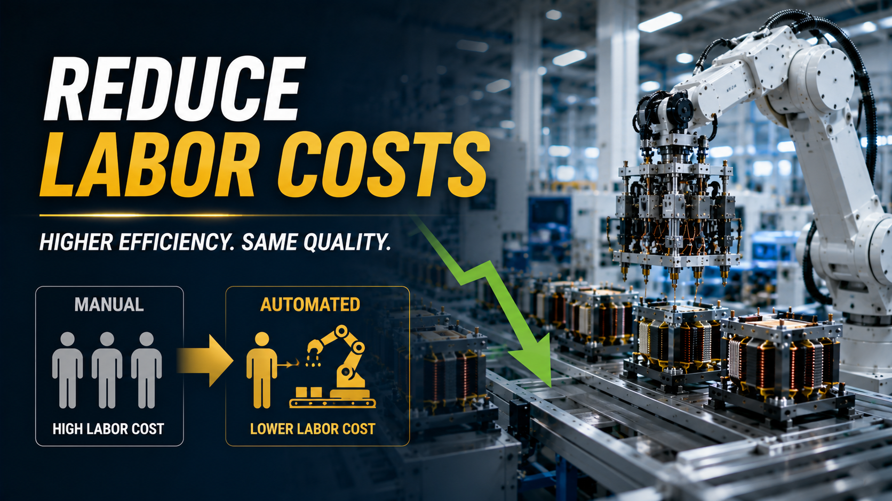

How to Reduce Labor Costs in Transformer Manufacturing Without Sacrificing Quality

Summary
Labor costs continue to rise across global manufacturing, while skilled workers are becoming increasingly difficult to recruit and retain. For transformer manufacturers, simply hiring more operators is no longer a sustainable way to increase production capacity.
The real challenge is reducing manufacturing costs without compromising product quality, delivery performance, or production flexibility.
This guide explores practical strategies that manufacturers are using to lower labor dependency, improve production efficiency, and achieve long-term cost reduction through factory automation, intelligent production planning, and smart manufacturing systems.
Technology
- Transformer Factory Automation
- High Frequency Transformer Manufacturing
- Multi-Axis Automatic Winding
- Automatic Material Handling
- Vision Inspection
- Electrical Testing
- MES Production Management
- Smart Factory
- Lean Manufacturing
- Digital Manufacturing
- Conveyor Automation
- Industrial Automation
Challenge
Across the global manufacturing industry, labor is becoming one of the fastest-growing operating expenses.
Transformer manufacturers are facing common challenges such as:
Rising wages and employee benefits
Difficulty recruiting skilled operators
High employee turnover
Inconsistent product quality between shifts
Production delays caused by labor shortages
Increasing customer expectations for quality and delivery
Shrinking profit margins despite growing sales
Many factories attempt to solve these issues by hiring additional workers. However, this often increases operating costs without significantly improving production efficiency.
The challenge is no longer finding more people. It is building a manufacturing system that delivers more output with fewer manual interventions.
Solution
Reducing labor costs does not mean replacing every worker with machines.
Instead, successful manufacturers redesign production processes so that automation handles repetitive, precision-dependent, and labor-intensive tasks while skilled employees focus on supervision, quality management, maintenance, and continuous improvement.
By integrating multi-axis winding, automated assembly, intelligent inspection, digital production management, and optimized material flow, factories can significantly improve productivity while maintaining high product quality and operational flexibility.
The objective is to reduce the labor required for each transformer produced, not simply reduce the number of employees.
Workflow & Layout
Production Planning (MES)
↓
Automatic Material Feeding
↓
Multi-Axis Winding
↓
Automatic Assembly
↓
Precision Soldering
↓
Electrical Testing
↓
AOI Vision Inspection
↓
Automatic Sorting
↓
Packaging
↓
Warehouse & Logistics
A streamlined workflow minimizes unnecessary handling, reduces waiting time between operations, and enables continuous production with fewer operators.
Results & ROI
- Manufacturers that implement intelligent automation often achieve measurable business improvements
- including:
- Business Indicator Improvement
- Direct Labor Requirement Reduced significantly
- Labor Cost per Unit Lower
- Production Efficiency Higher
- Product Consistency Improved
- Defect & Rework Rate Reduced
- Equipment Utilization Increased
- Production Lead Time Shorter
- Factory Scalability Easier
- Long-Term Profitability Improved
- Rather than focusing only on wage savings
- the greatest financial benefit comes from increasing output
- reducing waste
- and improving overall manufacturing efficiency.
Equipment List
- Typical automation equipment includes:
- Automatic Material Feeding System
- Multi-Axis Winding Machine
- Wire Cutting & Processing Equipment
- Automatic Core Assembly Station
- Precision Soldering System
- Glue Dispensing Equipment
- Electrical Testing System
- AOI Vision Inspection
- Conveyor & Transfer System
- Automatic Packaging Line
- MES Production Management System
- Smart Warehouse Integration (Optional)
Project Overview / Opening
For many transformer manufacturers, labor has become the single largest variable cost affecting profitability.
At the same time, global competition is intensifying. Customers expect better quality, faster delivery, and more competitive pricing, leaving manufacturers with little room to absorb rising operating costs.
The factories achieving sustainable growth are not simply reducing headcount. They are redesigning their production systems to eliminate inefficient manual operations, standardize quality, and maximize the value created by every employee.
Factory automation is becoming a strategic tool for controlling costs while supporting long-term business expansion.
Key Points
- Labor shortages are becoming a global manufacturing challenge.
- Cost reduction should focus on improving productivity, not simply reducing staff.
- Automation standardizes production quality.
- Intelligent inspection reduces expensive rework.
- Digital production management improves operational visibility.
- Lean material flow minimizes wasted labor.
- MES systems support data-driven decision-making.
- Long-term competitiveness depends on manufacturing efficiency rather than labor cost alone.
Implementation / Workflow
A successful labor cost reduction strategy begins with analyzing the entire production process rather than individual workstations.
Manufacturers evaluate where manual operations consume the most time, where quality variations occur, and which processes create bottlenecks.
Automation is then introduced into high-impact areas such as winding, assembly, testing, inspection, and material handling.
Production data collected through MES platforms enables managers to monitor labor productivity, equipment performance, production efficiency, and quality trends in real time, allowing continuous optimization as demand grows.
This systematic approach delivers sustainable cost reductions while supporting future factory expansion.
Customer Value / Results
Factory owners, operations managers, and production directors gain significant long-term advantages through automation:
Lower manufacturing cost per product
Reduced dependence on labor availability
Stable product quality across every production batch
Higher production capacity without proportional workforce growth
Better delivery performance and customer satisfaction
Lower warranty and quality-related costs
Improved operational transparency through digital production data
Greater flexibility to introduce new transformer models
Stronger competitiveness in global electronics, EV, renewable energy, and industrial power markets
The most successful manufacturers view automation not as a cost, but as an investment in long-term operational resilience and profitability.
Conclusion / Next Step
Reducing labor costs is no longer about employing fewer people. It is about building a smarter manufacturing system that produces more with greater consistency, higher efficiency, and lower operating costs. Manufacturers that combine automation, digital production management, and optimized workflows can improve profitability while maintaining the quality standards required by today's global markets.
We help manufacturers worldwide design, source, integrate, and deliver industrial automation projects by leveraging China's manufacturing ecosystem. Whether your goal is to reduce labor costs, increase production efficiency, modernize an existing transformer factory, or build a new automated production line, we provide complete support from factory planning and equipment sourcing to system integration and project delivery.
Visit our Contact page to discuss your production challenges or submit your project requirements. Our engineering team can help evaluate your current manufacturing process, identify automation opportunities, and develop a customized solution that improves efficiency, reduces operating costs, and supports your long-term business growth.
SEO Title
How to Reduce Labor Costs in Transformer Manufacturing Without Sacrificing Quality
SEO Description
Labor costs continue to rise across global manufacturing, while skilled workers are becoming increasingly difficult to recruit and retain. For transformer manufacturers, simply hiring more operators is no longer a sustainable way to increase production capacity.
The real challenge is reducing manufacturing costs without compromising product quality, delivery performance, or production flexibility.
This guide explores practical strategies that manufacturers are using to lower labor dependency, improve production efficiency, and achieve long-term cost reduction through factory automation, intelligent production planning, and smart manufacturing systems.
Related Blog
Start with Your Business Challenge
Tell us about your warehouse, factory, or production requirements. We'll help you explore practical automation solutions and relevant project references.